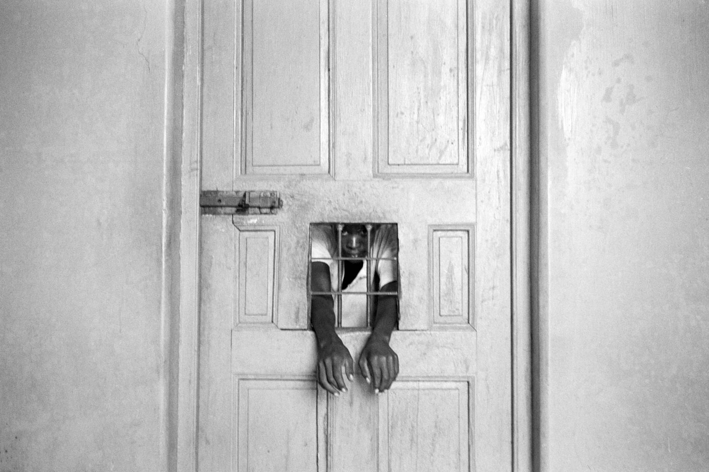
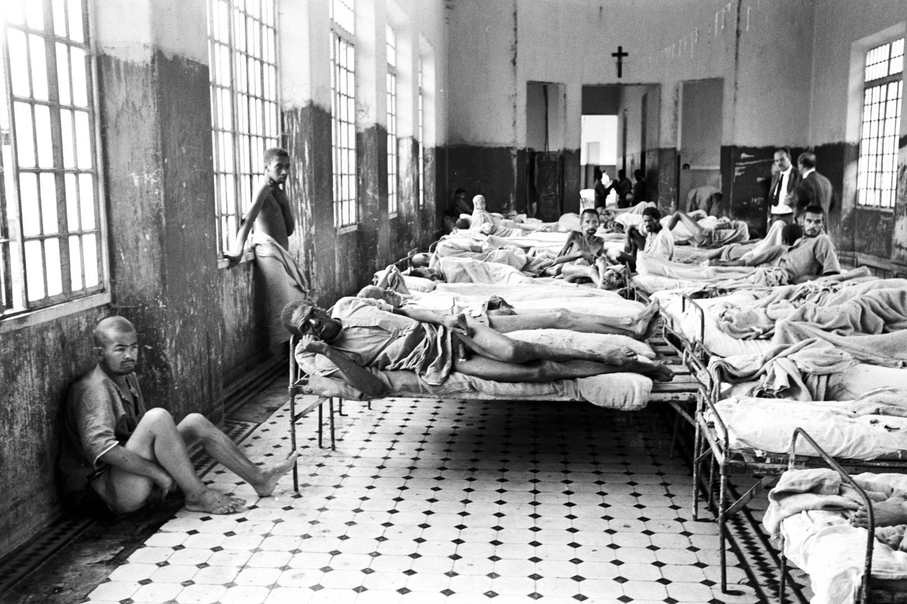
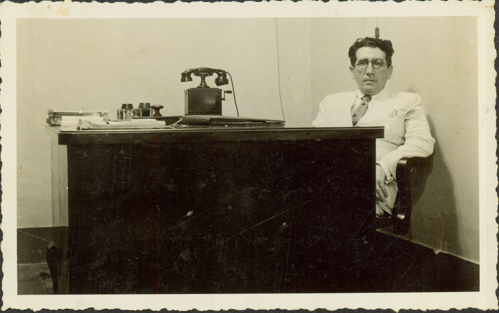
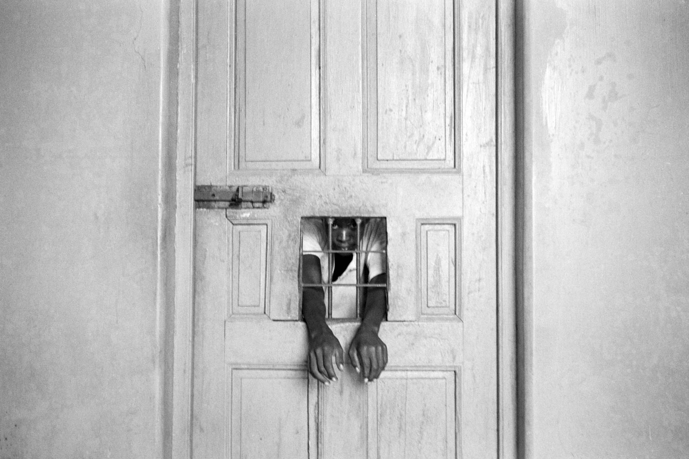
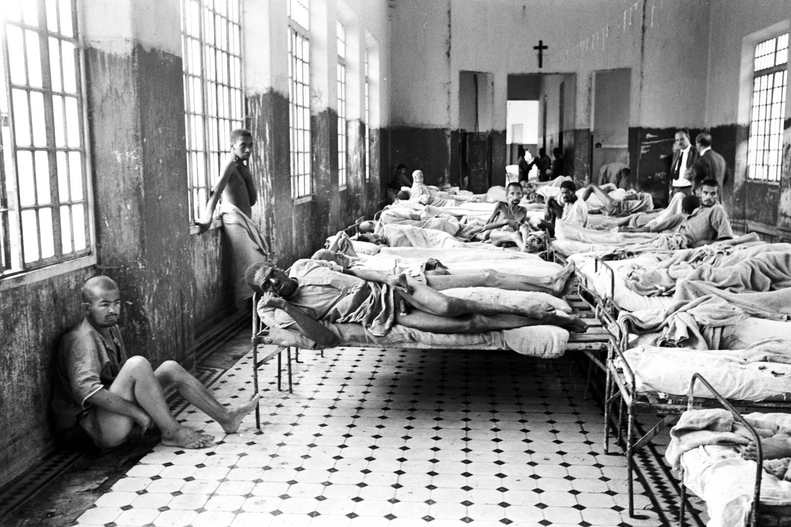
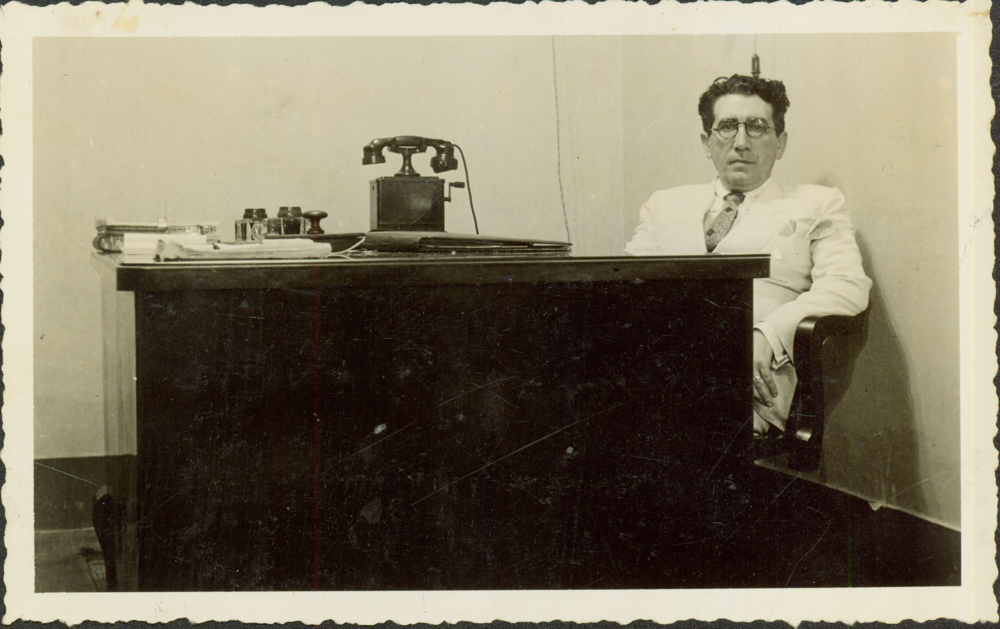

Acervo Iconográfico
Aqui você encontra imagens do Hospital psiquiátrico de Barbacena.


 





×

Fontes das fotos:
- https://testemunhaocular.ims.com.br/convidados/luis-alfredo/
- http://www.siaapm.cultura.mg.gov.br/modules/brtbusca/index.php?query=hospital+colonia+barbacena&mid=54&action=showall&andor=AND&start=0